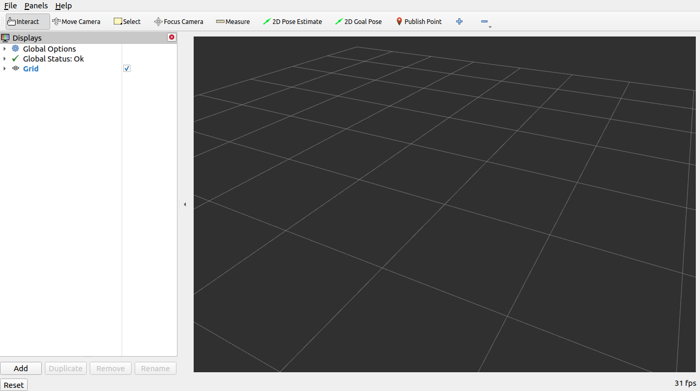
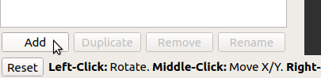
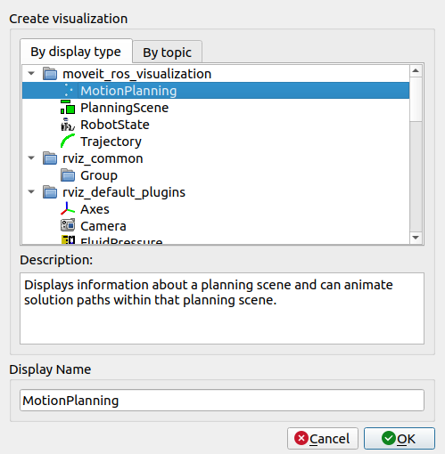
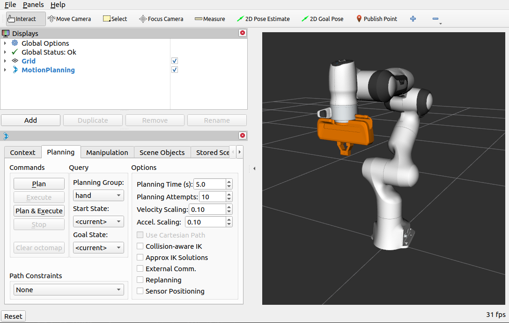

This is your step-by-step guide to learning MoveIt with the Panda robotic arm. Follow along with each section to explore RViz and motion planning hands-on.
In this section, you will explore RViz and get familiar with the MoveIt environment before diving into motion planning.
Start the MoveIt demo with RViz:
cd ~/ws_moveit2
source install/setup.bash
unset GTK_PATH
export LD_LIBRARY_PATH=$(echo "$LD_LIBRARY_PATH" | tr ':' '\n' | grep -v snap | tr '\n' ':')
ros2 launch moveit2_tutorials demo.launch.py rviz_config:=panda_moveit_config_demo_empty.rvizYou will see an empty RViz world. You now need to add the Motion Planning plugin.


moveit_ros_visualization folder, select MotionPlanning as the Display Type and click OK.

Click on MotionPlanning in the Displays panel and configure the following:
/panda_link0panda_armThese two settings are essential — they tell MoveIt which coordinate frame and which joint group to plan for.
Enable both the start and goal state markers so you can interact with the arm:
You can now drag both arms to any position in the workspace. Try moving them around!
MoveIt can detect when links collide with each other in real time.
Key insight: When Collision-Aware IK is on, the robot refuses impossible or unsafe poses. This is how real robots avoid self-damage.
Now plan an actual trajectory between your start and goal states:
By default, MoveIt plans in joint space. Enabling Cartesian mode forces the end-effector to move in a straight line.
This is useful in tasks like welding or painting where the tool must follow a precise linear path.
Click Plan & Execute to send the trajectory to the simulated robot. The robot will move in the simulation.
The default velocity and acceleration are set to 10% of the robot's maximum. You can increase these using the speed sliders in the Planning tab — but move carefully when increasing speed in a real robot context.
This is a great debugging tool to understand exactly how MoveIt breaks a motion into discrete steps.
Once you are happy with your setup, save it so you don't have to reconfigure next time:
moveit2_tutorials/doc/tutorials/quickstart_in_rviz/launch/ and rebuild the workspace.ros2 launch moveit2_tutorials demo.launch.py rviz_config:=your_rviz_config.rvizHands-On Joint Control Exercise
In this part, you will control the robotic arm manually and move it around using the Joint State Publisher. You will also have a chance to interact with a block in the scene and try to catch it with the gripper.
Run the following commands to start the joint control demo with a cube:
cd ~/ws_moveit2
source install/setup.bash
unset GTK_PATH
export LD_LIBRARY_PATH=$(echo "$LD_LIBRARY_PATH" | tr ':' '\n' | grep -v snap | tr '\n' ':')
ros2 launch mtc_tutorial joint_control_with_cube.launch.pyUse the Joint State Publisher GUI to move each joint of the robotic arm. Try positioning the arm to reach the block and attempt to grasp it!
Hands-On Code Walkthrough
In Part 1, you planned a single motion — move the arm from point A to point B. But real robot tasks are made of many steps: open the gripper, approach the object, grasp it, lift it, move to a new location, and place it down.
MoveIt Task Constructor (MTC) lets you define these multi-step tasks as a sequence of stages. Each stage is responsible for one small piece of the overall plan, and MTC connects them together automatically.
Think of it like a recipe: each stage is one instruction. MTC figures out how to connect each step to the next so the whole plan works together.
Open two terminals. In Terminal 1, launch the MoveIt environment and RViz:
cd ~/ws_moveit2
source install/setup.bash
unset GTK_PATH
export LD_LIBRARY_PATH=$(echo "$LD_LIBRARY_PATH" | tr ':' '\n' | grep -v snap | tr '\n' ':')
ros2 launch moveit2_tutorials mtc_demo.launch.pyIn Terminal 2, launch your pick and place node:
cd ~/ws_moveit2
source install/setup.bash
unset GTK_PATH
export LD_LIBRARY_PATH=$(echo "$LD_LIBRARY_PATH" | tr ':' '\n' | grep -v snap | tr '\n' ':')
ros2 launch mtc_tutorial pick_place_demo.launch.pyWhen MTC runs, it prints a stage diagram to the terminal. Here is how to read it:
1 - ← 1 → - 0 / initial_state
- 0 → 0 → - 0 / move_to_homeCommon failure: if planning fails, try increasingsetTimeout()on your Connect stages, or check that the cylinder is within the robot's reach by adjusting its position insetupPlanningScene().
| Stage Type | Example | What it does |
|---|---|---|
| Generator | CurrentState, GenerateGraspPose | Creates starting points for planning; no input needed |
| Propagator | MoveRelative, MoveTo | Takes a state and extends it; moves the robot |
| Connector | Connect | Bridges two stages by planning the motion between them |
| Container | SerialContainer | Groups multiple stages together as one logical unit |